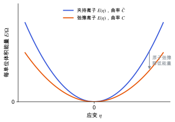

弹性张量
应力–应变关系、弹性常数的对称性与力学稳定性判据，以及夹持离子与弛豫离子的区别。
直观阅读需要
- 胡克定律；应变与应力
- 从能量到结构与响应 里“响应是曲率”
完整推导还需要
- 张量与坐标变换 与 Voigt 记号
- 正定矩阵与特征值
只是提示，不需要先读完才能往下看。
直觉直观解释
弹性张量回答：给晶体一个小应变，它“顶回来”的应力有多大。它是能量对应变的曲率。曲率大，晶体硬；曲率小，晶体软。
在压电计算里弹性张量出现两次：一是把计算得到的 e 换成实验常报告的 d（见 压电张量）；二是它和内应变项来自同一套原子弛豫。分子晶体里分子之间靠氢键和色散相互作用，某些剪切方向非常软，这些方向的弹性常数误差会被直接放大到 d 上。

| 符号 | 是什么 | 图里对应 |
|---|---|---|
| \eta | 某一个应变分量 | 横轴 |
| E/\Omega | 每单位体积的能量（相对平衡点） | 纵轴 |
| \bar C | 夹持离子弹性常数：原子保持分数坐标不变时的曲率 | 蓝线 |
| C | 弛豫离子弹性常数：原子在应变后的晶胞里重新弛豫时的曲率 | 橙线 |
| 灰色箭头 | 原子弛豫释放的能量；它使 C \le \bar C | 两条线之间 |
定义与公式数学与推导
C_{ij} = C_{ji}（来自能量的二阶导数可交换），所以最多 21 个独立分量。晶体对称性进一步减少独立分量：三斜 21 个、单斜 13 个、正交 9 个、立方 3 个（晶体物理教材中的共识计数）。β-甘氨酸是单斜晶系，有 13 个独立分量。
力学稳定性
有一个负本征值，说明沿对应的应变组合能量下降，结构会自发变形。计算中出现负本征值，先排除数值原因（应变步长、截断能、结构未充分优化），再考虑结构本身不稳定。
夹持离子与弛豫离子
应变后原子在晶胞中会受到力 \Lambda\,\eta，让它们弛豫到新的极小点，能量会再降低一些。对弛豫后的能量求二阶导数 [Wu, Vanderbilt & Hamann 2005]：
其中 \bar C 是夹持离子弹性张量；\Lambda_{mi} 是内应变张量（应变 i 在原子坐标 m 上产生的力）；K 是去掉平移零模的力常数矩阵。因为 K 正定，减去的项半正定，所以弛豫只会让晶体变软或不变。
在本研究线里的样子对应与边界
- VASP：
IBRION = 6配合ISIF ≥ 3用有限差分应变计算弹性张量，并给出离子弛豫的贡献；输出单位是 kBar（1 kBar = 0.1 GPa）。具体输出块的名称和剪切分量顺序以 [VASP Wiki: IBRION] 和 OUTCAR 的说明为准。 - 截断能：应力对基组不完备敏感（Pulay 应力）[VASP Wiki: Pulay stress]。算弹性常数用的截断能通常要高于只优化结构所需的值，并对 C_{ij} 本身做收敛（见 收敛测试）。
- 色散校正：分子间的弹性常数主要由氢键和色散决定。用 PBE 还是 PBE-D3(BJ)，会改变平衡体积和软方向的曲率（见 色散校正）。
- MACE 等势函数：用机器学习势预优化时，可以算一次弹性张量检查力学稳定性。它与 DFT 的差别反映势函数在软方向上的曲率误差。
常见坑对应与边界
- 参考结构有残余应力：上面的展开假设参考点无应力。如果晶胞没完全优化，有限差分得到的“弹性常数”会混入残余应力的贡献。
- 剪切的因子 2：张量应变与工程剪切应变差 2 倍，剪切分量 C_{44} 等最容易因此错 2 倍或 4 倍。
- 单斜设置：二重轴选 b 还是 c 会改变哪些 C_{ij} 非零（例如 C_{15} 还是 C_{16}），要与晶体学设置对应。
- 只看夹持离子值：分子晶体里 \bar C 与 C 可以差很多，比较实验应当用弛豫离子值。
检验自己对应与边界
参考资料
论文Mouhat & Coudert 2014
尚未实际查阅，目前只是拟查阅书目
论文Wu, Vanderbilt & Hamann 2005
尚未实际查阅，目前只是拟查阅书目
官方文档IEEE Std 176
IEEE Standard on Piezoelectricity, ANSI/IEEE Std 176-1987
尚未实际查阅，目前只是拟查阅书目
官方文档VASP Wiki: IBRION
VASP Wiki, IBRION（结构优化、有限差分与 DFPT 的选择）
尚未实际查阅，目前只是拟查阅书目
官方文档VASP Wiki: Pulay stress
VASP Wiki, Pulay stress（基组不完备导致的应力误差）
尚未实际查阅，目前只是拟查阅书目
分类响应与张量性质 · 概念 · 研究线：压电与响应计算 · 状态：草稿